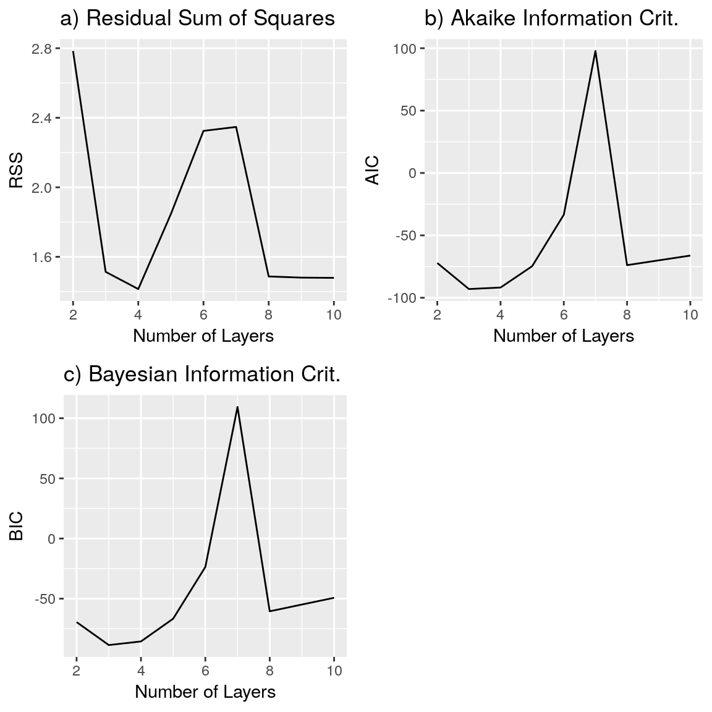
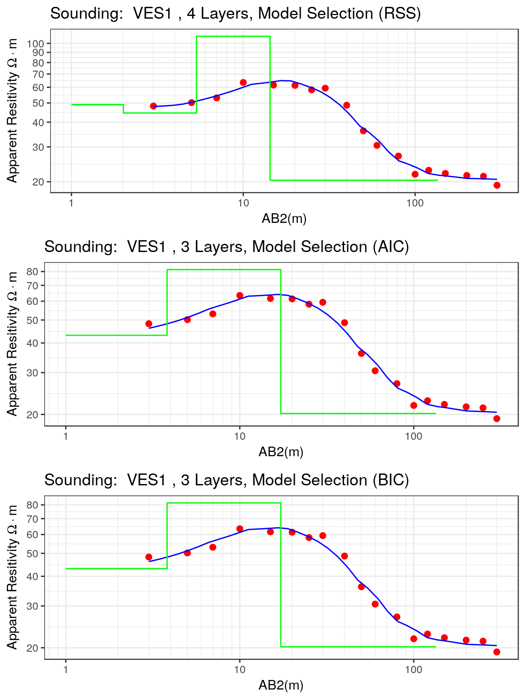
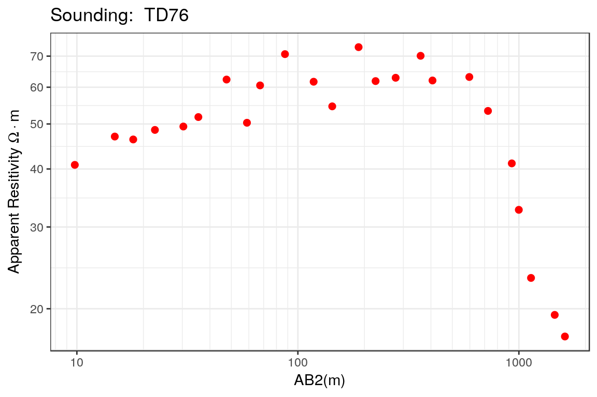
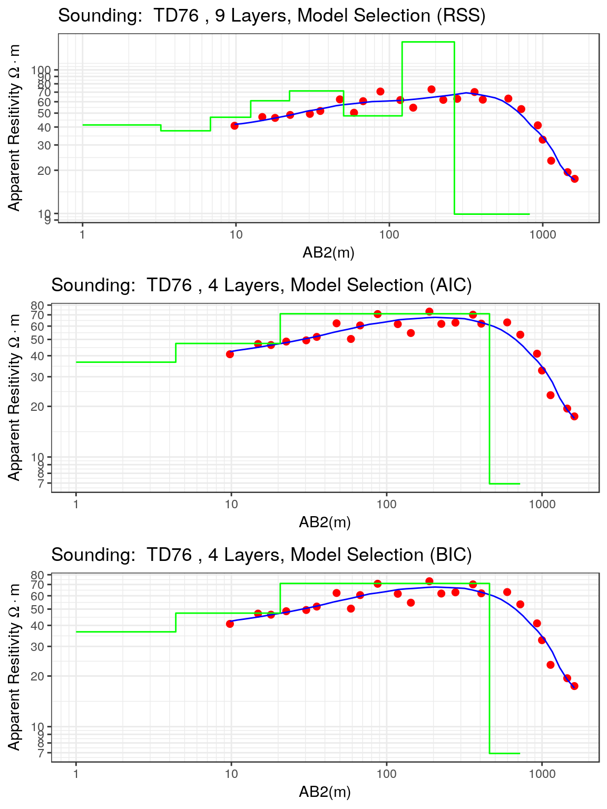

rves-modelselection.RmdThe Vertical Electrical Sounding (VES) is one of the oldest resistivity methods, and it is based on the measurements of the electrical apparent resistivity of the geological medium when the distance between the electrical source and the measurement nodes is increased. The main advantages of the VES include:
The main use of VES is to define an Earth model composed of different layers with defined electrical resistivies and thicknesses, but the main problem with this procedure is the objective definition of the number of layers to be used in this parameter estimation. This means that the number of layers can be considered as another parameter to be estimated but this makes the whole estimation approach more difficult. A simple strategy used since the early days is to identify the inflection points in the apparent resistivity curve and the number of these define the numbers of layers to be estimated. This approach is based on the geometrical characteristics of the geoelectrical response of simple layered models and, although. it is easy to apply, it lacks of a proper foundation on estimation theory. In reality, the number of layers is a redundant parameter since it defines the number of resistivities and thicknesses to be estimated, and therefore its specification is not required as long as the resistivities and thicknesses are correctly specified.
In practical applications, several models can be fitted to the measured data and now the analyst faces what is called a model selection problem where the main goal is to distinguish between competing alternatives of parameter values. The purpose of the model selection is to balance the quality of the fit to measured data and the predictive ability of the fitted model. This model selection is based on the use of a model selection statistics which allows a model ranking from which a best model can be identified and used for futher inference. There are two model selection statistics commonly used in practical problems: the Akaike Information Criterion (Akaike 1974) and Bayesian Information Criterion (Schwarz 1978).
In this document, the basic concepts of the stepwise parameter estimation and model selection are introduced in the analysis of Vertical Electric Soundings and two examples of these approaches using the rves package are presented.
The stepwise estimation is a method of estimating model parameters in which the choice of number of parameters and their values are carried out by an automatic procedure. The basic idea is to increase the number of parameters in a stepwise fashion and evaluate the resulting model using a specific criteria such as RMSE, Akaike Information Criteria nad/or Bayesian Information Criteria.
In the specific case of VES, this stepwise estimation is composed of the following steps:
A similar approach has been proposed by Muiuane and Pedersen (1999) where the initial solution of a two layer model is defined using the geometric mean of the resistivity values, and the results of the previously estimated model is used as initial solution of the model with the increased number of layers.
The model selection procedure can be defined as the selection a statistical model from a set of candidate models fitted to the same dataset. This situation is very common in geophysics where several models can properly describe the measurements equally well, and therefore it does not make sense to choose a single model as a representation of the subsurface conditions. However, this is the conventional approach where the model that best explain the geophysical measurements is used in the subsequent geological interpretation. Given the importance of this interpretation in the decision making process, it is important to use valid and objective scientific principles in the selection of the statistical model.
The key question of the model selection problem is the objective definition of the the best model. In general this definition is based on the goodness of fit of the estimated model, that is, how close the model explain the observations obtained in the field. This sounds reasonable at the beginning, however, this approach might overfit the model in the sense that a model with a large number of parameters eventually will explain the observations. This problematic situation can be solved by the use of an alternative set of measures that chooses a specific model in terms of the goodness of fit and the number of parameter used. This approach avoids overfitting by penalizing models with a large number of parameters.
The AIC is a statistical measure designed to choose the best model from a set of candidate models that depends on the trade off between the goodness of fit between the proposed model and the measurements and the number of estimated parameters (Akaike 1974). Therefore this is an useful tool for model selection. The model with the minimum value of the AIC among a set of competing models is selected as the best.
The estimator of the Akaike Information Criterion of a model with a maximum likelihood value of the likelihood function \(\hat{L}\) and \(k\) parameters is given by:
\[ \text{AIC}=2k-2\log{(\hat{L})} \]
The previous expression can be simplified under the assumption of a Normal distribution for the residuals, which leads to the following expression for the Likelihood function:
\[
\log{[\hat{L}(\hat{\rho},\sigma_{e}^{2})]}=\frac{n}{2}\log{(2\pi)}-\frac{n}{2}\log{\sigma_{e}^{2}}-\frac{1}{2\sigma_{e}^{2}}\sum_{i=1}^{n}(\rho_{i}-\hat{\rho}_{i})^{2}
\] where \(\hat{\rho}\) is the vector of the model parameters including the real resistivities and the layer thicknesses, \(\sigma_{e}^{2}\) is the variance of the residuals, and \(n\) is the number of data, \(\rho_{i}\) are the measured apparent resistivities and \(\hat{\rho}_{i}\) are the calculated apparent resistivities.
The Bayesian Information Criterion (also known as Schwarz Criterion) was developed by Gideon Schwarz (Schwarz 1978), and it is based on the same idea as the AIC where the two terms are used in the model selection procedure: the first term is related to the goodness of fit of the model and the second term is related to a penalty for the number of the parameters in the model. In general, this penalty term is greater in the BIC than in the AIC.
The estimator of the BIC is given by:
\[ \text{BIC}=k\log{n}-2\log{(\hat{L})} \] where \(\hat{L}\) is the maximum likelihood obtained by the model, \(k\) is the number of parameters and \(n\) is the number of data used in the parameter estimation.
When the residuals follow a Gaussian Distribution then the previous equation becomes:
\[ \text{BIC}=n \log{\sigma_{e}^{2}}+k \log{n} \] where \(\sigma_{e}^{2}\) is the variance of the residuals. When the Residual Sum of Squares is used as goodness of fit measure then the previous equation is transformed into:
\[ \text{BIC}=n\log{\left( \frac{\text{rss}}{n} \right)} + k\log{n} \] where the Residual Sum of Squares is given by: \[ \text{rss}=\sum_{i}^{n}(\rho_{i} - \hat{\rho}_{i})^{2} \]
In this section two examples of stepwise parameter estimation and model selection of Vertical Electrical Soundings are presented.
data("ves_data1")
ves1 <- ves(id = "VES1", ab2 = ves_data1$ab2, apprho = ves_data1$apprho)res.rss <- calibrate_step_nls(ves1, max.layers = 10, iterations = 30,
ireport = 5, trace = FALSE)p1 <- ggplot() + geom_line(aes(x = Layers, y = RSS),data = res.rss.df) +
xlab("Number of Layers") +
ylab("RSS") +
ggtitle("VES1: Residual Sum of Squares")
p2 <- ggplot() + geom_line(aes(x = Layers, y = AIC),data = res.rss.df) +
xlab("Number of Layers") +
ylab("AIC") +
ggtitle("VES1: Akaike Information Criterion")
p3 <- ggplot() + geom_line(aes(x = Layers, y = BIC),data = res.rss.df) +
xlab("Number of Layers") +
ylab("BIC") +
ggtitle("VES1: Bayesian Information Criterion")
grid.arrange(p1, p2 ,p3, ncol = 2)
knitr::kable(rss.results.df, format = "html") %>%
kable_styling(position = "center")| Layer | Resistivity | Thickness |
|---|---|---|
| Layer1 | 49.06263 | 1.006542 |
| Layer2 | 44.49187 | 3.336569 |
| Layer3 | 108.55586 | 8.984935 |
| Layer4 | 20.36878 | 8.695652 |
p1rss <- plot(ves1.rss, type = "ves", main = "4 Layers, Model Selection (RSS)")
p1aic <- plot(ves1.aic, type = "ves", main = "3 Layers, Model Selection (AIC)")
p1bic <- plot(ves1.bic, type = "ves", main = "3 Layers, Model Selection (BIC)")
grid.arrange(p1rss, p1aic, p1bic, ncol = 1)
knitr::kable(aic.results.df, format = "html") %>%
kable_styling(position = "center")| Layer | Resistivity | Thickness |
|---|---|---|
| Layer1 | 43.08747 | 2.822144 |
| Layer2 | 81.52829 | 13.38822 |
| Layer3 | 20.18257 | 8.695652 |
knitr::kable(bic.results.df, format = "html") %>%
kable_styling(position = "center")| Layer | Resistivity | Thickness |
|---|---|---|
| Layer1 | 43.08747 | 2.822144 |
| Layer2 | 81.52829 | 13.38822 |
| Layer3 | 20.18257 | 8.695652 |
data("ves_data2")
ves.cmplx <- ves(id = "TD76", ab2 = ves_data2$ab2, apprho = ves_data2$apprho) plot(ves.cmplx, type = "ves")
res.cmplx <- calibrate_step_nls(ves.cmplx, max.layers = 10,
iterations = 30,
ireport = 5,
trace = FALSE)pc1 <- ggplot() + geom_line(aes(x = Layers, y = RSS), data = cmplx.all.measures.df) +
xlab("Number of Layers") +
ylab("RSS") +
ggtitle("a) Residual Sum of Squares")
pc2 <- ggplot() + geom_line(aes(x = Layers, y = AIC), data = cmplx.all.measures.df) +
xlab("Number of Layers") +
ylab("AIC")+
ggtitle("b) Akaike Information Crit.")
pc3 <- ggplot() + geom_line(aes(x = Layers, y = BIC), data = cmplx.all.measures.df) +
xlab("Number of Layers") +
ylab("BIC") +
ggtitle("c) Bayesian Information Crit.")grid.arrange(pc1,pc2,pc3,ncol=2)p1cmplx <- plot(ves.cmplx.rss, type = "ves", main = "9 Layers, Model Selection (RSS)")
p2cmplx <- plot(ves.cmplx.aic, type = "ves", main = "4 Layers, Model Selection (AIC)")
p3cmplx <- plot(ves.cmplx.bic, type = "ves", main = "4 Layers, Model Selection (BIC)")
grid.arrange(p1cmplx, p2cmplx, p3cmplx, nrow = 3)
Akaike, H. 1974. “A New Look at the Statistical Model Identification.” IEEE Transactions on Automatic Control 19 (6). Institute of Electrical; Electronics Engineers (IEEE): 716–23. doi:10.1109/tac.1974.1100705.
Muiuane, E.A, and L.B Pedersen. 1999. “Automatic 1d Interpretation of DC Resistivity Sounding Data.” Journal of Applied Geophysics 42 (1). Elsevier BV: 35–45. doi:10.1016/s0926-9851(99)00015-4.
Schwarz, Gideon. 1978. “Estimating the Dimension of a Model.” The Annals of Statistics 6 (2). Institute of Mathematical Statistics: 461–64. doi:10.1214/aos/1176344136.